提起博客，这似乎是一个需要氪金的工程，实不然。
我开始的理解：博客=域名（at least 10￥）+代码（HTML、CSS、JavaScript…）+服务器（at least 3000￥）
但后来，当我看到Hexo这款神奇的开源的静态博客生成器，就彻底改变了我的想法。
网上有很多教程，但总找不到全面和有效的（本来Hexo的坑就多），所以今天就和各位分享一下。
优点
应用markdown，易于编辑，博客前端自动生成无需搭建
能够像手机一样自由添加应用（即插件）
无需基础，只要你对代码敏感就好
缺点：
博客访问用的文件生成的速度和上传博客的速度跟电脑配置有关，一般较慢
博客源文件（配置好）占用你的硬盘内存较大，一般接近1G或以上
材料/工具:
安装完成后即可进入下一步。
基础配置:
本地：
本步骤时间较长，请耐心等待。
在本地创建一个新的文件夹（必须为新的/空的），名字自行定义。
打开文件夹后鼠标右键打开Git Bash。
输入npm install -g hexo下载Hexo
输入hexo init安装Hexo（此时文件夹下会陆续出现文件/文件夹）
输入npm install安装必要配置包
输入hexo s启动Hexo，打开浏览器输入地址localhost:4000查看
云端：
在github上新建存储库你的github用户名.github.io
进入存储库后，打开这里：
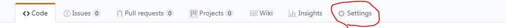
找到这行并修改成如下：
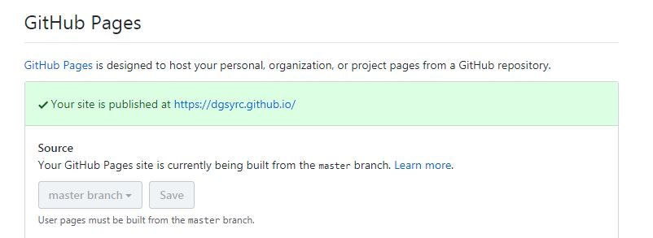
在Git Bash中输入ssh-keygen生成SSH密钥，并按三次回车，随后用记事本打开C:\Users\Administrator\.ssh\id_rsa.pub（本目录因电脑而异，大部分相同），把内容复制下来，打开https://github.com/settings/keys,新建一个SSH Key，粘贴key项目内（title随便填），最后按下add SSh key。
回到Git Bash，输入ssh -T git@github.com,若显示Hi!xxxx的字眼，则代表成功。
接下来输入npm install hexo-deployer-git --save安装上传工具deployer
打开文件夹根目录下的_config.yml，找到如下部分并按要求修改：
注意：该配置项:后要有两个空格（当时就把我坑到了）
1 | deploy: |
输入hexo g生成静态博客文件
输入hexo d上传文件至github
若是首次上传，会失败，会有以下提示：
1 | git config --global user.name "yourname" |
将这两行指令分别复制并将yorname``youremail@example.com分别替换成你的github用户名与注册邮箱，重新粘贴至Git Bash即可。
博客配置：
终于到最复杂的环节了，但其实认真读一遍说明你就会感到豁然开朗。
我这里就只介绍NexT主题（V6.7.0）中的Gemini风格的配置，同主题不同风格注意_config.yml中的设置限制（基本没有限制），其他主题参阅官网（其实大都相似）
以下所有步骤均建议配置完成后输入hexo s启动本地浏览，进入localhost:4000验证。
主题安装：
把压缩包直接解压到博客根目录下的theme文件夹内：
打开博客根目录下的_config.yml，找到这行并修改成如下：
1 | theme: hexo-theme-next-6.7.0 |
首页标题/名字/语言设置
打开博客根目录下的_config.yml.
其它语言参照/theme/languages/下的语言配置文件（可魔改）
例子：
1 | # 标题 |
博客图标：
1 | favicon: |
目录：
主目录：
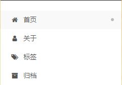
按个人所需使用，每行设置前加#的为不显示。
home 主页
about 关于
tags 标签（配置在下文会提到）
archives 归档
其他的项目不建议小白使用（因为真的没什么用）
若要添加新的选项，按照name: /(在博客根目录下source文件夹下的地址) || 图标,并在Git Bash输入hexo new page "about"新建页面，在/soure/about/index.md内即可编辑
图标的名字参照官网
1 | menu: |
文章内部目录栏
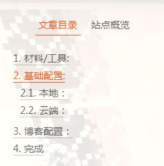
1 | toc: |
目录栏的位置：
1 | sidebar: |
设置主题风格
1 | # Schemes |
社交网站
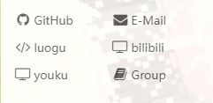
|| 后面的仍为图标名，参照上文中目录图标设置即可。
例子：
1 | social: |
若不想显示图标，则将下面这行设置为false.
1 | social_icons: |
友情链接
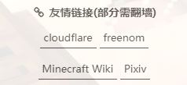
1 | # 标题前图标 |
头像
1 | # 头像 |
返回顶部按钮：
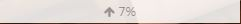
找到如下代码：
b2t: true为显示，b2t: false为不显示。
1 | # 返回顶部按钮 |
阅读全文按钮：
enable: true为主页显示全文，enable: false为主页不显示全文。
1 | auto_excerpt: |
文章字数/阅读时长统计
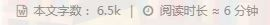
在Git Bash中输入以下指令，安装插件。
1 | npm install hexo-symbols-count-time --save |
修改如下代码：
博客目录下_config.yml：
1 | symbols_count_time: |
主题目录下_config.yml：
1 | # 博客字数，阅读时长统计 |
代码复制按钮
1 | codeblock: |
使用$Latex$
当per_page: true时，只有博文中有mathjax: true时才启用，若为false,则每篇文章都启用。
1 | math: |
分享
页面左边浮动按钮：
文章底部：
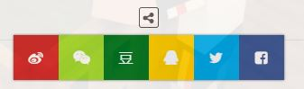
在Git Bash中输入git clone https://github.com/theme-next/theme-next-needmoreshare2 source/lib/needsharebutton安装插件。
修改如下配置：
1 | needmoreshare2: |
访问统计
文章访问统计：
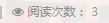
博客访问统计：
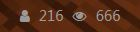
修改如下设置即可：
1 | busuanzi_count: |
站内搜索
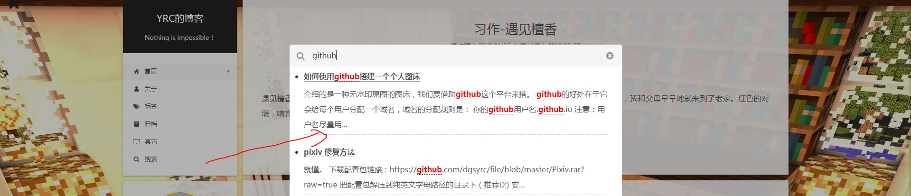
在Git Bash中输入npm install hexo-generator-searchdb --save安装插件。
在博客目录下的_config.yml添加如下设置：
1 | search: |
在theme目录下的_config.yml修改如下设置：
1 | # 站内搜索 |
书签
添加书签后，访客每次访问文章时会返回到上次阅读的那行。
在Git Bash中输入git clone https://github.com/theme-next/theme-next-bookmark.git source/lib/bookmark安装插件。
1 | # 书签 |
标签
在Git Bash中输入hexo new page "tags"新建Tag页面。
然后向source\tags\index.md中添加一行：
1 | type: "tags" |
文章标签的设置如下：
1 | tags: |
背景
打开themes目录下\source\css\_custom\custom.styl
添加如下代码:
1 | body { |
background-image:url:背景链接，目录默认为主题目录下的\soure\images\
background-repeat: no-repeat:背景图不重复出现
background-size: cover:平铺
opacity::不透明度
鼠标点击显示爱心图案
下载js：
将该js放在主题根目录下\source\js\src内。
打开layout/_layout.swig,在文件末尾添加一行：
1 | <script type="text/javascript" src="/js/src/love.js"></script> |
文章的撰写
新建文章
在Git Bash输入hexo new "文章名"新建文章
如想在文中引用博客内图片，则需修改博客目录下的_config.yml的这一行（为true即可），以便以后使用hexo new命令时自动生成文件夹，需引用的图片需放在博客根目录下的\source\_post\文章名\内：
1 | post_asset_folder: true |
除了可以使用命令添加文章外，还可以直接在_post文件夹内直接新建文章名.md与文件夹文章名，但是文章名.md内必须按照以下格式：
1 | --- |
撰写
打开\source\_post\文章名.md
按照markdown的语法写即可。
完成
部分效果可参考我的hexo博客